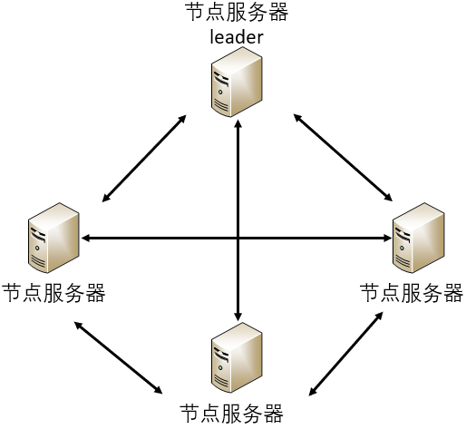

- 00 开篇词 四纵四横，带你透彻理解分布式技术.md.html
- 01 分布式缘何而起：从单兵，到游击队，到集团军.md.html
- 02 分布式系统的指标：啥是分布式的三围.md.html
- 03 分布式互斥：有你没我，有我没你.md.html
- 04 分布式选举：国不可一日无君.md.html
- 05 分布式共识：存异求同.md.html
- 06 分布式事务：All or nothing.md.html
- 07 分布式锁：关键重地，非请勿入.md.html
- 08 分布式技术是如何引爆人工智能的？.md.html
- 09 分布式体系结构之集中式结构：一人在上，万人在下.md.html
- 10 分布式体系结构之非集中式结构：众生平等.md.html
- 11 分布式调度架构之单体调度：物质文明、精神文明一手抓.md.html
- 12 分布式调度架构之两层调度：物质文明、精神文明两手抓.md.html
- 13 分布式调度架构之共享状态调度：物质文明、精神文明多手协商抓.md.html
- 14 答疑篇：分布式事务与分布式锁相关问题.md.html
- 15 分布式计算模式之MR：一门同流合污的艺术.md.html
- 16 分布式计算模式之Stream：一门背锅的艺术.md.html
- 17 分布式计算模式之Actor：一门甩锅的艺术.md.html
- 18 分布式计算模式之流水线：你方唱罢我登场.md.html
- 19 分布式通信之远程调用：我是你的千里眼.md.html
- 20 分布式通信之发布订阅：送货上门.md.html
- 21 分布式通信之消息队列：货物自取.md.html
- 22 答疑篇：分布式体系架构与分布式计算相关问题.md.html
- 23 CAP理论：这顶帽子我不想要.md.html
- 24 分布式数据存储系统之三要素：顾客、导购与货架.md.html
- 25 数据分布方式之哈希与一致性哈希：“掐指一算”与“掐指两算”的事.md.html
- 26 分布式数据复制技术：分身有术.md.html
- 27 分布式数据之缓存技术：“身手钥钱”随身带.md.html
- 28 分布式高可靠之负载均衡：不患寡，而患不均.md.html
- 29 分布式高可靠之流量控制：大禹治水，在疏不在堵.md.html
- 30 分布式高可用之故障隔离：当断不断，反受其乱.md.html
- 31 分布式高可用之故障恢复：知错能改，善莫大焉.md.html
- 32 答疑篇：如何判断并解决网络分区问题？.md.html
- 33 知识串联：以购买火车票的流程串联分布式核心技术.md.html
- 34 搭建一个分布式实验环境：纸上得来终觉浅，绝知此事要躬行.md.html
- 特别放送 Jackey：寄语天涯客，轻寒底用愁.md.html
- 特别放送 分布式下的一致性杂谈.md.html
- 特别放送 崔新：追根溯源，拨开云雾见青天.md.html
- 特别放送 徐志强：学习这件事儿，不到长城非好汉.md.html
- 特别放送 那些你不能错过的分布式系统论文.md.html
- 结束语 为什么说提升职业竞争力要从尊重、诚实开始？.md.html
- 捐赠
10 分布式体系结构之非集中式结构：众生平等
你好，我是聂鹏程。今天，我来继续带你打卡分布式核心技术。
在上一篇文章中，我带你了解了分布式体系结构中的集中式结构。虽然很多云上的管理都采用了集中式结构，但是这种结构对中心服务器性能要求很高，而且存在单点瓶颈和单点故障问题。
为了解决这个问题，分布式领域中又出现了另一个经典的系统结构，即非集中式结构，也叫作分布式结构。那什么是非集中式结构呢，它的原理是什么样的，又有哪些集群采用了这种结构呢？
今天，我们就一起打卡非集中式结构，揭开它的神秘面纱吧。
什么是非集中式结构？
在非集中式结构中，服务的执行和数据的存储被分散到不同的服务器集群，服务器集群间通过消息传递进行通信和协调。
也就是说，在非集中式结构中，没有中央服务器和节点服务器之分，所有的服务器地位都是平等（对等）的，也就是我们常说的“众生平等”。这样一来，相比于集中式结构，非集中式结构就降低了某一个或者某一簇计算机集群的压力，在解决了单点瓶颈和单点故障问题的同时，还提升了系统的并发度，比较适合大规模集群的管理。
所以近几年来，Google、 Amazon、Facebook、阿里巴巴、腾讯等互联网公司在一些业务中也相继采用了非集中式结构。
接下来，我将为你介绍3种典型的非集中式架构系统，包括Akka集群、Redis集群和Cassandra集群，来帮助你深入理解非集中式架构。
Akka集群
在介绍Akka集群的结构之前，我带你了解一下什么是Akka框架吧。
Akka是一个开发库和运行环境，用于构建可扩展的、弹性的、快速响应的应用程序。Akka框架是基于Actor模型实现的，Actor模型是一个封装了状态和行为的对象，它接收消息并基于该消息执行计算。Actor之间通信的唯一机制就是消息传递，每个Actor都有自己的MailBox。
比如，在分布式系统中，一个服务器或一个节点可以视为一个Actor，Actor与Actor之间采用mail进行通信，如下图所示：

可以看到，Actor发送的Mail消息会存储在接收方的MailBox中。默认情况下，接收方按照mail到达的先后顺序，从MailBox中提取mail消息，并进行相应的计算处理。
备注：关于Actor模型更详细的内容，我会在第17篇文章中与你讲述。
显然，Actor模型采用异步消息调用机制，具有非阻塞、高性能等特点，可以用于处理并发问题。Akka集群充分利用了Actor模型的优势，提供了一个非集中式架构的集群管理模块，用来构建可扩展的、弹性的分布式应用程序。
Akka集群负责Actor模型底层的节点管理，包括故障检测、节点加入/退出集群等。也就是说，Akka集群为Actor模型提供了一个可容错、去中心化的节点集群管理系统，来保证Actor的运行和Actor之间的通信。
如下图所示，Akka集群是一个完全去中心化的分布式集群管理系统。一个集群由多个节点组成，每个节点都可以进行数据处理和任务执行，节点之间均可进行通信。节点有Leader节点和非Leader节点之分。与非Leader节点相比，Leader节点只是增加了负责节点的加入和移除集群的功能，所以并不会影响非集中式结构中节点的平等关系。

可以看到，Akka集群的两个重点是数据传输和集群组建及管理，所以接下来我将从这两个方面与你介绍Akka集群。
首先，我们看一下数据传输。在Akka集群中，节点是对等的，也就是说每个节点是可以并发处理的，因此必然存在数据传输和一致性的问题。
比如，我们要针对数据进行操作，将X=1修改为X=2。现在集群中节点1进行了修改使得X=2，但其他节点上还是X=1，因此节点1需要将X=2的消息告知其他节点，以保证最终集群中所有节点上均为X=2。
其实，这个问题就是分布式共识问题。我已经在第5篇文章“分布式共识：存异求同”中，与你介绍了PoW、PoS和DPoS三种达成共识的方法，你可以再复习下相关内容。
Akka集群主要采用的是谁的时间戳最新（也就是数据最新），就以谁为准的原则。在这里我要重点与你讲述的是，如何将X=2这个消息传输给集群中的每个节点。
Akka集群采用了Gossip协议，该协议是最终一致性协议。它的原理是每个节点周期性地从自己维护的集群节点列表中，随机选择k个节点，将自己存储的数据信息发给这k个节点，接收到该信息的节点采用前面讲的共识原则，对收到的数据和本地数据进行合并，这样迭代几个周期后，集群中所有节点上的数据信息就一致了。
这就好比我们生活中的“谣言传播”一样，用户A告诉用户B“商场新开了一家火锅店”，用户B收到信息后再告诉用户C，然后用户C再告诉用户D。这样，用户A、B、C、D最终都知道了这个消息。
接下来，我们看一下集群组建及管理。下图展示了Akka集群的创建过程。在创建集群时，节点被分为三种类型，即：
- 种子节点。使用静态配置文件方式或者系统运行时指定方式，可以生成种子节点；种子节点是普通节点加入集群的联系点，可以自动接收新加入集群的节点的信息。
- 首种子节点。首种子节点是配置文件中的第一个种子节点，其功能是集群第一次启动时，首种子节点启动起来，集群才能组建成功，保证集群第一次创建时只有一个集群。如下图A节点，就是Akka集群的首种子节点。
- 普通节点。可以向种子节点或集群中的任意节点发送Join消息，请求加入集群。如下图的B和C节点，通过向A节点发送Join消息，从而加入到Akka集群。
图片来源：https://getakka.net/articles/clustering/cluster-overview.html
Akka集群的每个节点启动后，读取配置文件获取种子节点列表，然后开始组建集群：
- 如果本节点为首种子节点，则把自己加入到集群列表中，即以自己为中心构建集群；
- 如果本节点为种子节点，则向首种子节点请求加入集群，当首种子节点回复同意消息后，可以加入集群，否则不可加入集群；
- 如果本节点为普通节点，则可以向任一种子节点（包括首种子节点）请求加入集群，收到同意后，则加入集群，否则不可加入集群。
加入首种子节点或种子节点的节点信息，会通过Gossip协议的传播方式传播给当前已加入的所有节点，以完成集群组建。当集群组建完成后，就不存在种子节点与普通节点之分了，每个节点均可执行Actor应用程序。
Akka集群可以构建可扩展的、弹性的分布式应用程序，因此在JVM中应用了Akka框架，从而实现并发编程。目前，豌豆荚、蘑菇街等公司采用了Akka集群。
到这里，我们小结一下吧。Akka集群是一个完全去中心化的集群管理系统，当集群组建完成后，每个节点均可执行Actor应用程序，因此支持并发操作。但，这个并发操作引入了数据同步和一致性问题，所以Akka集群采用了Gossip协议进行数据同步，通过谁的时间戳最新就以谁为准，来解决一致性问题。
在实际业务场景中，除了面向应用程序平台的分布式集群管理之外，分布式数据存储也是一个非常重要的话题。在这其中，分布式数据存储中的集群管理便是一个关键因素。那么接下来，我就以开源数据库Redis的集群管理系统为例，与你展开介绍吧。
Redis集群
Redis是一个开源的、包含多种数据结构的高性能Key-value数据库，主要有以下特征：
- 支持多种数据结构，包括字符串（String）、散列（Hash）、列表（List）、集合（Set）、有序集合（Sorted Set）等；
- 支持数据的持久化和备份。数据可以保存在磁盘中，下次直接加载使用，且可以采用主从模式（Master/Slave）进行数据备份。
- 基于内存运行，具有极高的性能。
Redis的这些特征均是为数据存储进行服务的，数据可分片存储在不同的Redis节点上，多个Redis节点间可共享数据，而提供这项能力的就是Redis 集群。
Redis 集群中不存在中央节点，是典型的去中心化结构，每个节点均可与其他节点通信。所有节点均可负责存储数据、记录集群的状态（包括键值到正确节点的映射），客户端可以访问或连接到任一节点上。Redis 集群的架构图，如下所示。
当然，节点之间的数据传输仍采用了Gossip协议，来保证集群中数据的最终一致性。
Redis集群中的节点用于数据存储，所以在设计时，需要考虑数据的可靠性和分片存储问题。
对于可靠性的问题，集群中每个节点均存在主备，也就是说每台服务器上都运行两个Redis服务，分别为主备，主故障后，备升主。
而对于数据的分片存储问题，Redis集群引入了“哈希槽”的这一概念。Redis 集群内置了16384个哈希槽，每个节点负责一部分哈希槽。当客户端要存储一个数据或对象时，Redis先对key进行CRC16校验，然后进行16384取模，也即HASH_SLOT = CRC16(key) mod 16384，来决定哈希槽的编号，从而确定存储在哪个节点上。
比如，当前集群有3个节点，那么:
- 节点 A 包含 0 到 5500号哈希槽；
- 节点 B 包含5501 到 11000 号哈希槽；
- 节点 C 包含11001 到 16383号哈希槽。
Redis集群利用哈希槽实现了数据的分片存储，从而将Redis的写操作分摊到了多个节点上，提高了写并发能力。
到这里，我们小结一下。Redis集群是一个非集中式集群管理系统，没有中心节点，不会因为某个节点造成性能瓶颈，每个节点均支持数据存储，且采用分片存储方式，提高了写的并发能力。同时，每个节点的设计采用主备设计，提高了数据的可靠性。
鉴于这些优点，Redis已被Twitter、Uber、GitHub、Instagaram等公司采用。
除了Redis外，还有一个开源分布式key-value数据库系统Cassandra。接下来，我就再与你分享下Cassandra集群的设计，以加深你对非集中式架构的理解。
Cassandra集群
与Redis类似，Cassandra也支持数据的分布式存储和操作。因此，Cassandra的集群架构与数据分片存储方案，与Redis集群类似。
如下图所示，Cassandra集群的系统架构是基于一致性哈希的完全P2P结构，没有Master的概念，所有节点都是同样的角色，彻底避免了因为单点问题导致的系统不稳定。Cassandra集群节点间的状态同步，也是通过Gossip协议来进行P2P通信的。

集群中的每个节点，都可以存储数据，并接收来自客户端的请求。Cassandra集群数据存储与Redis的不同之处是，Redis集群每个节点代表一部分哈希槽，一个哈希槽代表一个哈希值区间，而Cassandra集群中每个节点代表一个哈希值。
在Cassandra集群中，每次客户端可以向集群中的任意一个节点请求数据，接收到请求的节点将key值进行哈希操作，找出在一致性哈希环上是哪些节点应该存储这个数据，然后将请求转发到相应节点上，并将查询结果反馈返回给客户端。
目前，Cassandra集群因为完全去中心化的结构模式，已经被Hulu、Apple、Comcast、Instagram、Spotify、eBay、Netflix等公司使用。
到这里，我们小结一下吧。Cassandra采用去中心化的架构，解决了集中式结构的单点故障问题，同时因为数据基于哈希值分区存储，提高了读写数据的并发能力。在Cassandra集群中，没有Master的概念，每个节点代表一个哈希值，通过哈希映射的方式决定数据存储的位置。集群间的状态同步通过Gossip协议来进行P2P的通信。
对比分析
好了，以上就是Akka集群、Redis集群和Cassandra集群的主要内容了。为了便于理解与记忆，我将这3个集群的主要特征梳理为了一张表格，如下所示：-
知识扩展：如何优化Gossip协议中的重复消息问题？
非集中式结构的通信协议采用了Gossip协议。而Gossip是一种谣言传播协议，每个节点周期性地从节点列表中选择k个节点，将本节点存储的信息传播出去，直到所有节点信息一致，即算法收敛了。
这里有个问题，如果每次都是随机选择k个节点的话，势必会存在重复选择同样节点的可能，增加消息量。你觉得这个问题是否可以优化，又应该如何优化呢？
首先，这个问题肯定是可以优化的。解决方案是，每个节点记录当前传输的消息且还未达到收敛的时候，已经发送给了哪些节点，然后每次选择时从没有发送过的节点列表中随机选择k个节点，直到所有节点均被传输或集群收敛为止。这样，一方面减少了重复消息量，另一方面加快了收敛速度。
总结
集中式结构虽然易于理解，但容易出现单点瓶颈和单点故障等问题，而非集中结构才是超大规模分布式系统的首选结构。所以今天，我以Akka集群、Redis集群和Cassandra集群的结构为例，与你详细介绍了非集中式架构。
Akka集群是一个完全去中心化的集群管理系统，节点之间都是P2P的连接模式，通过Gossip协议来进行通信，节点之间有角色划分，负责数据存储的节点会进行存储数据。
Redis集群也是P2P的网状连接模式，但是基于key-value的数据库模型，每个节点都可以执行数据的计算和存储。此外，Redis集群引入了哈希槽的概念，来解决数据的分片存储问题。
Cassandra集群的结构是一致性哈希的P2P，节点会构成一个环结构，通过哈希映射来选择对应的节点。
好了，到最后，我再以一个思维导图为你总结一下这三个集群核心知识点，以方便你理解与记忆。
虽然这三种集群的节点组织结构各有不同，但节点之间都是通过Gossip协议来传递信息的。因此，在实现过程中，集群的消息传输、节点的功能等，在不同的分布式系统中都是类似的，而难点主要在于集群结构的设计。
由于Akka集群、Redis集群和Cassandra集群都是典型的非集中式集群组织结构，目前应用已经非常广泛了，所以有很多的实现案例可供你借鉴了。对于具体集群使用配置可参考相应的官网手册，讲得比较全和细。
相信你通过对今天的学习，很快就可以上手非集中式架构的集群管理应用和实践了。加油，挑战一下自己吧！
思考题
边缘计算中边缘设备的管理，你认为适合非集中式结构还是集中式结构呢，原因又是什么呢？
我是聂鹏程，感谢你的收听，欢迎你在评论区给我留言分享你的观点，也欢迎你把这篇文章分享给更多的朋友一起阅读。我们下期再会！
© 2019 - 2023 Liangliang Lee. Powered by gin and hexo-theme-book.